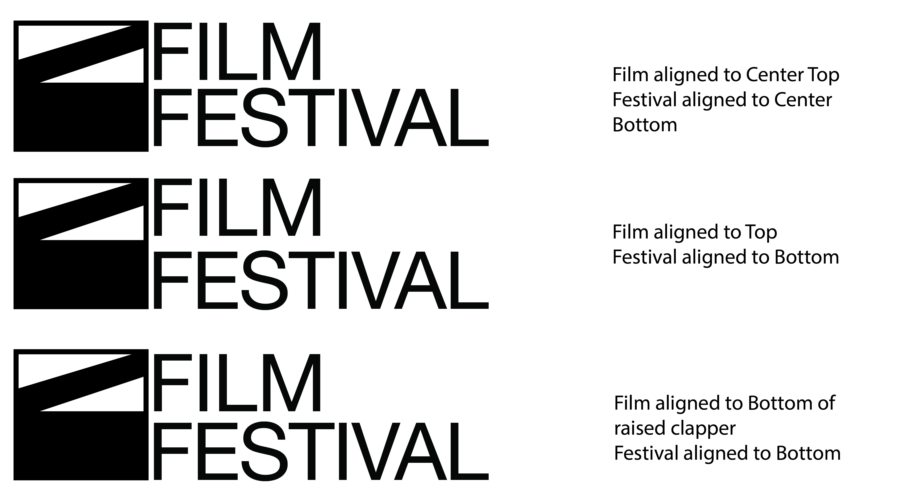
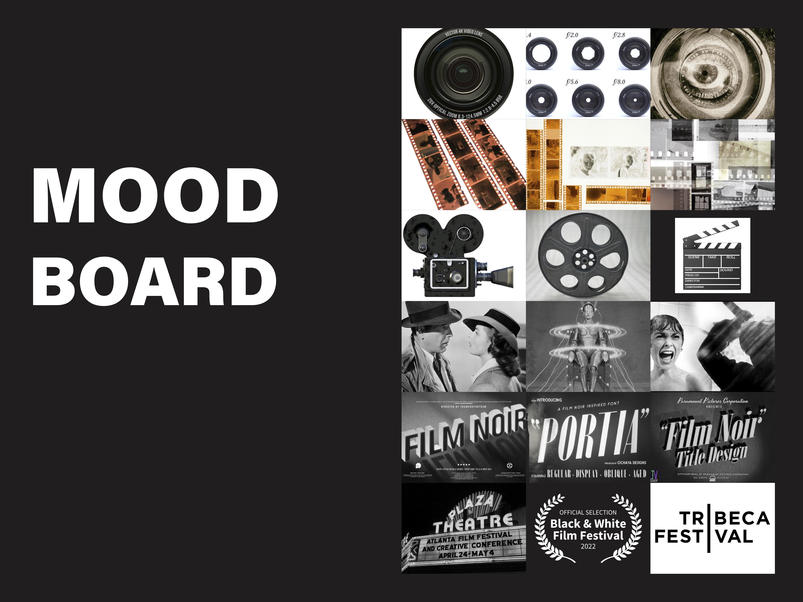
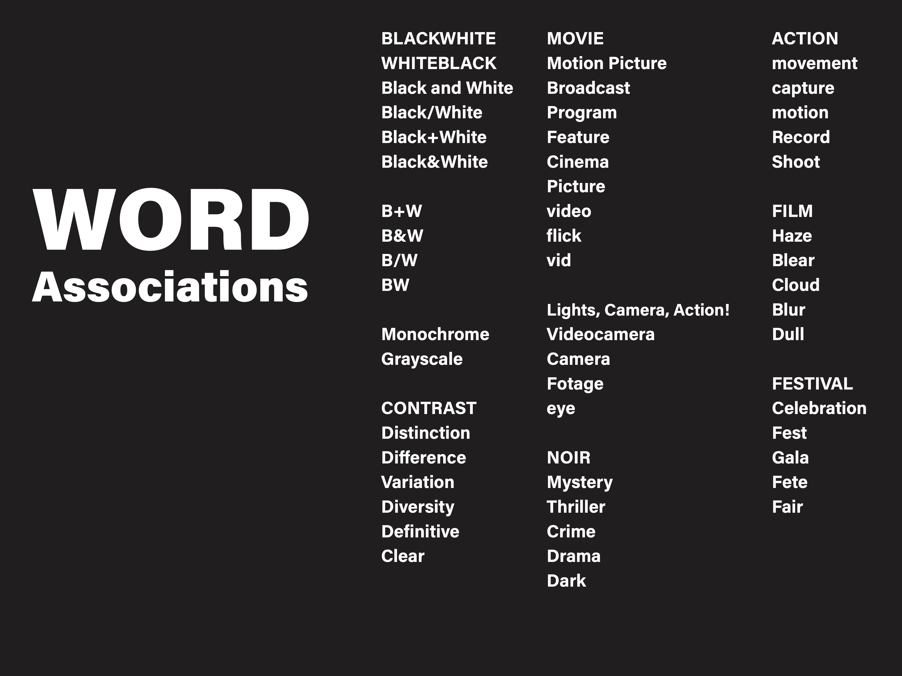
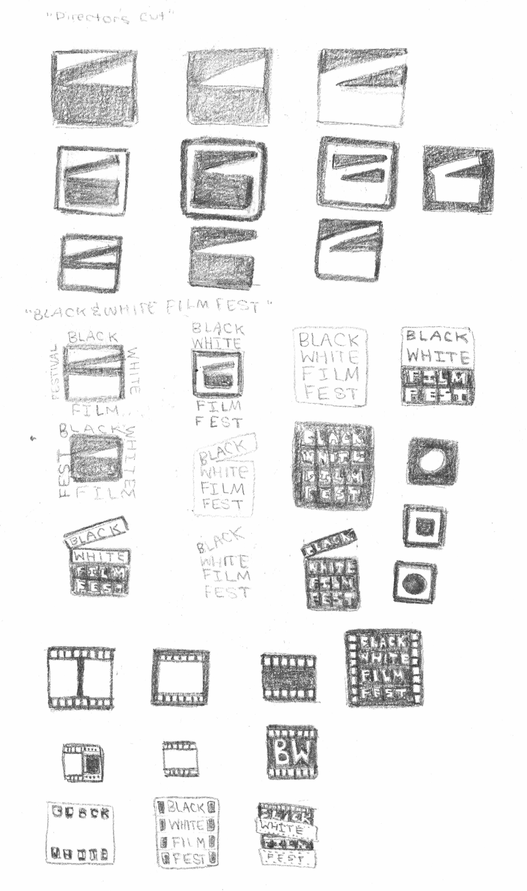
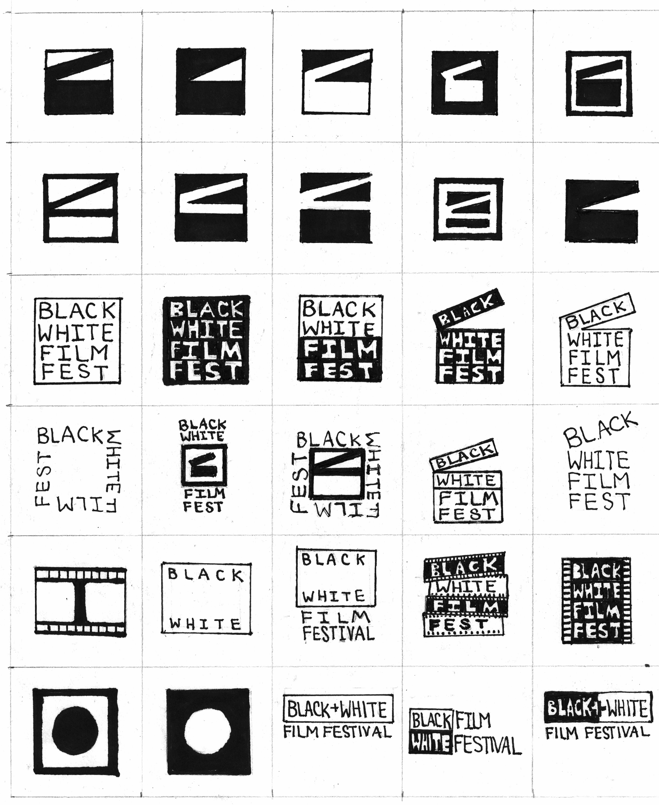
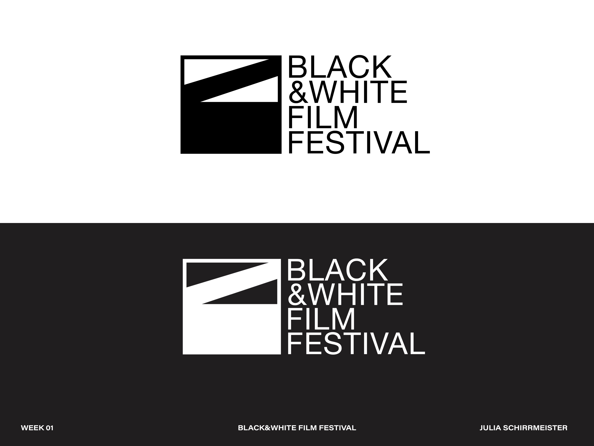

SVA Film Logo
A brand identity system designed for SVA's film program — developed from initial concept through final logo suite, combination marks, and merchandise applications. The identity captures the energy of student filmmaking: bold, cinematic, and unapologetically expressive.

Project Overview & Concept
SVA's film program needed an identity that felt distinct from the broader SVA brand — something that spoke to the independent spirit of filmmaking while remaining grounded in the institution's legacy of craft and experimentation.
The concept emerged from the idea of the frame — the fundamental unit of cinema. A single frame holds a world. The identity explores how containment and composition, two central ideas in filmmaking, translate into graphic form.
"A single frame holds a world. The logo should too."
Mood Board & Word Associations
Research began with a mood board pulling from film title sequences, independent cinema aesthetics, and type-led identities. Word associations helped define the tonal territory: raw, cinematic, editorial, bold, underground, New York.


The mood board pushed toward a high-contrast typographic identity — monochromatic, flexible across film grain and digital contexts, and able to hold its own against the visual density of filmmaking environments.
Sketch Iterations I & II
Two rounds of sketching explored different directions: abstract mark-making, typographic treatments, and hybrid approaches combining letterform with cinematic symbols (the aperture, the frame, the reel).


The second round narrowed to three promising directions, with the strongest emerging from the intersection of a bold condensed wordmark and a geometric frame device.
Logo Iterations I & II
Digital iterations refined proportion, weight, and the relationship between letterform and mark. Two directions were developed to high fidelity and presented for feedback.
Combination Mark & Identifier
The final direction was developed into a full combination mark system — primary lockup, stacked variant, icon-only mark, and reversed versions for dark backgrounds. Each variant was tested at small sizes for legibility.
Final Logos

The final wordmark uses a custom-modified condensed sans-serif with a geometric frame device that echoes a film aspect ratio. The identity is monochromatic with a single accent red for applied contexts.
Mockups
The identity was applied across a range of merchandise and print contexts to demonstrate real-world versatility: enamel pins, t-shirts, tote bags, and caps.
Final Outcome & Reflection
The SVA Film identity demonstrates how a strong conceptual anchor — the cinematic frame — can generate a cohesive, flexible visual system without becoming overly literal. The restraint of a monochromatic palette gave the mark authority and range.
What I learned: Logo design rewards patience with the sketch process. The final solution came from an idea in the second round of sketching that almost didn't make it into digital — a reminder to fully resolve ideas on paper before moving to screen.